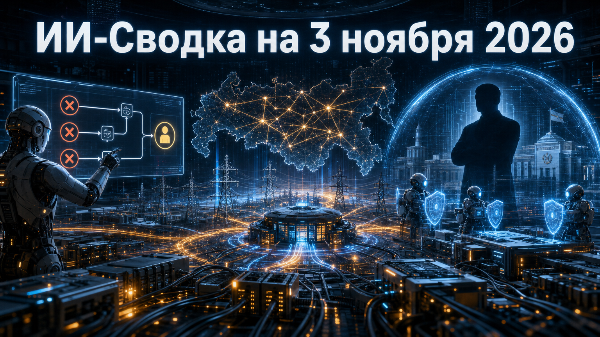

Новостей сегодня меньше, чем обычно
Сегодняшняя повестка связывает автономность ИИ с контролем на двух уровнях: в инструментах разработки и в критической инфраструктуре. Qwen Code вводит явную границу для автоматических исправлений pull request, а OpenAI расширяет публичную работу на стыке ИИ, национальной безопасности и защиты энергосетей.
Практический вывод для команд: агентам всё чаще задают не только цель, но и пределы самостоятельных попыток, после которых решение должно вернуться человеку. Для критических отраслей при этом важны прозрачные правила участия, полномочия и проверяемые результаты программ безопасности.
OpenAI сообщила о назначении Дэна Дрисколла Senior Counselor for National Security Modernization. В доступном материале подтверждено само назначение и название должности; деталей о полномочиях, сроках работы и конкретных программах в исследовательском пуле не приведено.
Само появление такой роли показывает, что взаимодействие разработчиков frontier-моделей с государственным и критическим сектором становится отдельным управленческим направлением. Однако делать выводы о практических функциях советника преждевременно, пока OpenAI не раскроет мандат, механизмы контроля и измеримые результаты работы. OpenAI appoints Dan Driscoll as Senior Counselor for National Security Modernization
OpenAI объявила о запуске Grid Protectors Program. По подтверждённому официальному сообщению, это новая программа компании, связанная с защитой энергосетей; в предоставленном материале не раскрыты её участники, технические инструменты, география, условия доступа или сроки.
Тема важна на фоне роста энергопотребления дата-центров и зависимости экономики от устойчивости электросетей. Но пока программу следует воспринимать как анонс OpenAI, а не как доказательство готового отраслевого решения: для оценки практической ценности потребуются сведения о сценариях применения, независимых проверках и ответственности участников. Introducing the Grid Protectors Program
Alibaba Qwen выпустила Qwen Code v0.26.5 — продолжение уже освещённой линии обновлений инструмента для агентной разработки. В команде /autofix-pr появился бюджет повторных попыток: после трёх неудачных циклов fix-push задача передаётся человеку и получает соответствующий статус. PR watch также может сначала подтянуть устаревшую базовую ветку перед исправлением CI, а режим --in-place позволяет работать в текущем checkout.
Для команд это полезная инженерная граница: агент не должен бесконечно менять код в надежде исправить пайплайн. Релиз также делает review устойчивее к изменению head-коммита и блокирующим условиям. Это продуктовый релиз, а не независимая оценка качества исправлений: эффект зависит от настроек репозитория, CI и человеческого review. Qwen Code v0.26.5